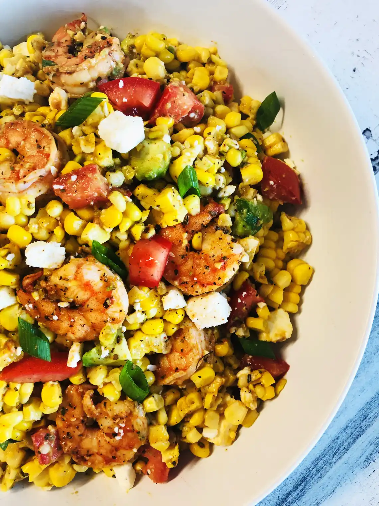

Shrimp Summer Salad

Description
This healthy and refreshing salad is sure to become a summer staple!
With absolutely no cooking required and only fifteen simple ingredients, this salad is beyond easy to make and even easier to enjoy!
Ingredients
- 5 ears of corn, cooked and cut off the cob
- 2 cups peeled shrimp
- 1/4 cup olive oil
- 2 cups cherry tomatoes, halved
- 1 bunch fresh cilantro, chopped finely
- 4 green onions, chopped
- 1 avocado, pitted and cubed
- juice of 1 lime
- 2/3 cup crumbled feta
- 1/4 cup apple cider vinegar
- 1 tsp salt
- 1/2 tsp black pepper
- 1/2 tsp garlic powder
- 1/2 tsp chili powder
- 1/2 tsp smoked paprika
Steps
- Combine spices into spice mix.
- Cover shrimp in 1 tbsp olive oil and half of the spice mix.
- Cook shrimp 5 min per side in a pan over medium heat.
- Remove shrimp from pan and combine with corn, tomatoes, cilantro, green onions, and avocado.
- Toss with lime juice, apple cider vinegar, and your remaining oil and spices.
- Top with feta and enjoy!